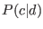
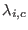
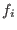
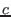

Next: The Support Vector Machine Up: Machine Learning Methods Previous: The Naive Bayes Classifier
Maximum Entropy is a general-purpose machine learning technique that provides the least biased estimate possible based on the given information. In other words, ``it is maximally noncommittal with regards to missing information'' [3]. Importantly, it makes no conditional independence assumption between features, as the Naive Bayes classifier does.
Maximum entropy's estimate of  takes the following exponential form:

The 's are feature-weigh parameters, where a large means that  is considered a strong indicator for class . We use 30 iterations of the Limited-Memory Variable Metric (L-BFGS) parameter estimation. Pang used the Improved Iterative Scaling (IIS) method, but L-BFGS, a method that was invented after their paper was published, was found to out-perform both IIS and generalized iterative scaling (GIS), yet another parameter estimation method.
We used Zhang Le's (2004) Package Maximum Entropy Modeling Toolkit for Python and C++ [4], with no special configuration.